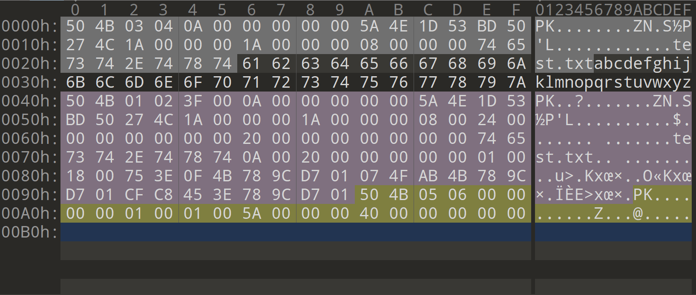

ZIP格式分析
最近遇到一道CTF题是和zip格式编码相关的，正好我一直以来就对各文件格式编码没有一个系统的认知，就趁这个机会好好学习一下。
简介
ZIP文件格式是一种数据压缩和文档储存的文件格式，原名Deflate，发明者为菲尔·卡茨（Phil Katz），他于1989年1月公布了该格式的资料。ZIP通常使用后缀名“.zip”，它的MIME格式为application/zip。当前，ZIP格式属于几种主流的压缩格式之一，其竞争者包括RAR格式以及开放源码的7z格式。从性能上比较，RAR及7z格式较ZIP格式压缩率较高，而7-Zip由于提供了免费的压缩工具而逐渐在更多的领域得到应用。Microsoft从Windows ME操作系统开始内置对zip格式的支持，即使用户的计算机上没有安装解压缩软件，也能打开和制作zip格式的压缩文件，OS X和流行的Linux操作系统也对zip格式提供了类似的支持。因此如果在网络上传播和分发文件，zip格式往往是最常用的选择。
官方文档
如果想要准确系统的了解整个zip格式，最好还是查看官方文档，链接如下：
.ZIP File Format Specification
格式分析
根据官方文档，我们可以得知，一个标准的zip格式文件由以下结构组成：
1 | [local file header 1] |
在这里我们只考虑 local file header + file data + data descriptor + central directory + end of central directory record.
文件头(Local file header)
1 | local file header signature 4 bytes (0x04034b50) |
为了演示的方便，以下我们以一个包含了文本内容为26个英文字母的文本文件的压缩包做对照分析。

- 文件头位置即为灰色区域，首先是本地文件头标识位(local file header signature)，值为固定的0x04034b50（需要注意的是单个字节数据在内存中的存储是低位在前，高位在后）。
- 解压文件所需pkware的最低版本(version needed to extract)：0x000a，一般不需要考虑。
- 通用比特标志位(general purpose bit flag)：0x0000，通常只需要考虑当bit 0为1时表示文件被加密。
- 压缩方式(compression method)：0x0000，当值为：0x0000时表示无压缩。
- 文件最后修改时间(last mod file time)：0x4e5a，以standard MS-DOS格式编码。
- 文件最后修改日期(last mod file date)：0x531d，同上。
- CRC32校验码(crc-32)：0x4c2750bd.
- 压缩后大小(compressed size)：0x0000001a，单位为byte，由此我们可以推断出标准ZIP格式最大压缩容量为：16^8 - 1 bytes ≈ 4 GB，而ZIP64格式最大压缩容量为 2^64 - 1 bytes ≈ 16EB。
- 未压缩的大小(uncompressed size)：0x0000001a，可见该文件并没有被压缩，这也与压缩方式为0x0000相吻合。
- 文件名长度(file name length)：0x0008.
- 扩展区长度(extra field length)：0x0000.
- 文件名(file name)：0x7478742e74736574.
- 扩展区(extra field)：无
文件数据(File data)
存储被压缩文件的数据：本例中即为26个英文字母，图中的黑色区域。
数据描述符(Data descriptor)
1 | crc-32 4 bytes |
该区域只有在文件头的通用比特标志位的第3位(0x0008)为1时才存在，紧跟在压缩文件的数据区之后，只用在不能对输出的 ZIP 文件进行检索时使用。
核心目录(Central directory)
1 | [file header 1] |
文件头(File header)
1 | central file header signature 4 bytes (0x02014b50) |
- 核心文件头标识位(central file header signature)：0x02014b50，为固定数值。
- 压缩所用pkware版本(version mad by)：0x003f.
- 解压所需的pkware最低版本(version needed to extract)：0x000a.
- 通用比特标志位(general purpose bit flag)：0x0000.
- 压缩方式(compression method)：0x0000.
- 文件最后修改时间(last mod file time)：0x4e5a.
- 文件最后修改日期(last mod file date)：0x531d.
- CRC32校验码(crc-32)：0x4c2750bd.
- 压缩后大小(compressed size)：0x0000001a.
- 未压缩的大小(uncompressed size)：0x0000001a.
- 文件名长度(file name length)：0x0008.
- 扩展区长度(extra field length)：0x0024.
- 文件注释长度(file comment length)：0x0000.
- 文件开始位置的磁盘编号(disk number start)：0x0000.
- 内部文件属性(internal file attributes)：0x0000.
- 外部文件属性(external file attributes)：0x00000002，外部属性的映射取决于主机系统，对于MS-DOS，低位字节是MS-DOS目录属性字节，如果输入来自于标准输入，该区域置为零。
- 本地文件头的相互偏移(relative offset of local header)：0x00000000.
- 文件名(file name)：0x7478742e74736574.
- 扩展区(extra field)：即文件名后的36个字节数据。
- 文件注释(file comment)：无
数字签名(Digital signature)
1 | header signature 4 bytes (0x05054b50) |
本区域不是必须的，在此不多赘述，感兴趣可以查看官方文档。
目录结束标识(End of central directory record)
1 | end of central dir signature 4 bytes (0x06054b50) |
- 核心目录结束标识位(end of central dir signature)：0x06054b50，为固定数值。
- 该磁盘编号(number of this disk)：0x0000.
- 核心目录开始位置的磁盘编号(number of the disk with the start of the central directory)：0x0000.
- 该磁盘所记录的核心目录总数(total number of entries in the central directory on this disk)：0x0001.
- 核心目录结构总数(total number of entries in the central directory on this disk)：0x0001.
- 核心目录大小(size of the central directory)：0x0000005a.
- 核心目录开始位置相较于起始磁盘号的偏移量(offset of start of central directory with respect to the starting disk number)：0x00000040.
- ZIP文件注释长度(.ZIP file comment length)：0x0000.
- ZIP文件注释(.ZIP file comment)：无
例题
题目链接
分析与解答
由于对ZIP格式编码不熟悉，刚看到这一串字符以为是某种加密方式，在学习过本文后在看，很明显504B0304为ZIP格式的文件头标识位，因此我们打开010Editor，导入这一串16进制编码，并保存为ZIP格式。解压时发现设置了密码，考虑密码应该不会太复杂，直接暴力破解得到结果。
 微信
微信 支付宝
支付宝